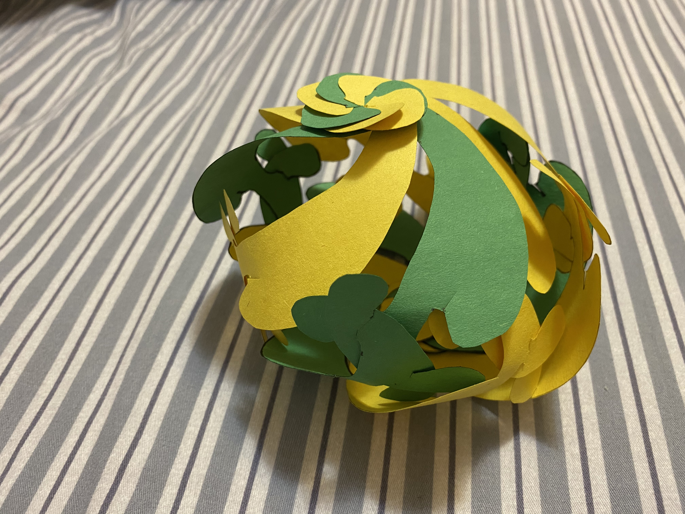
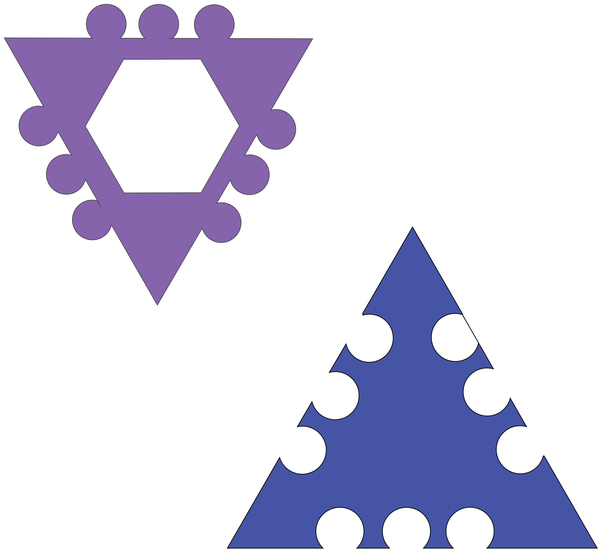
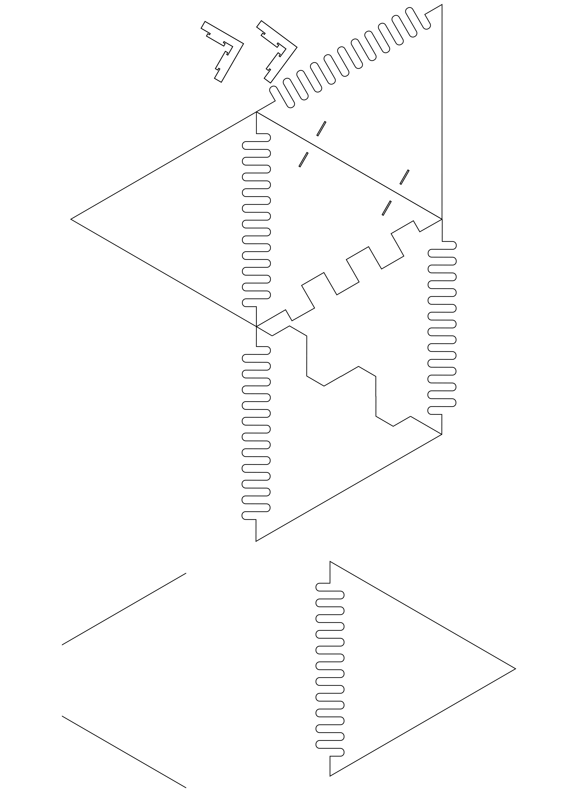
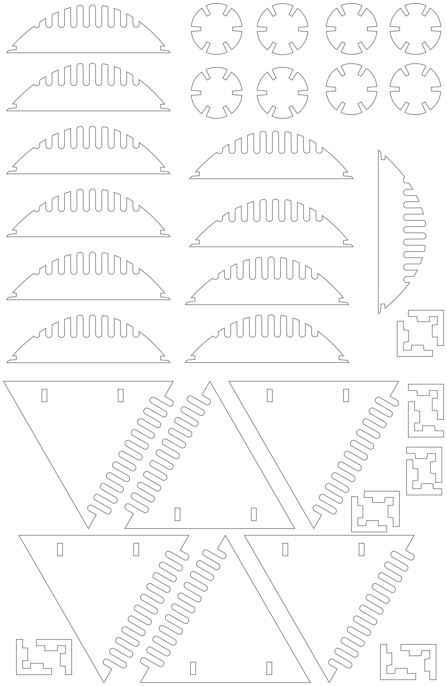
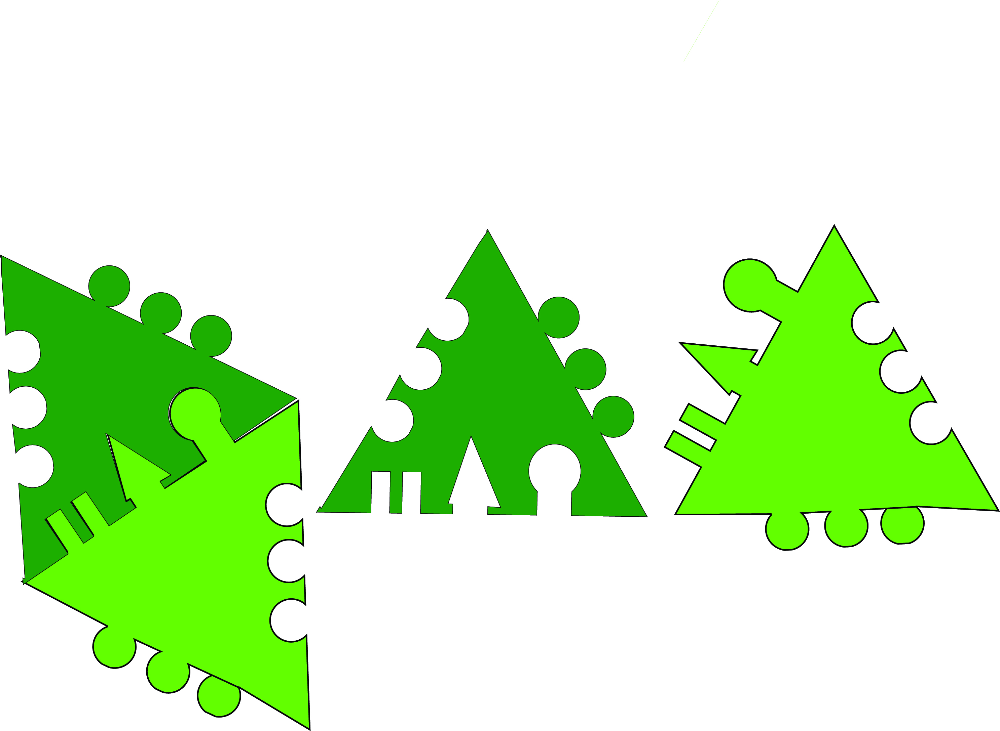
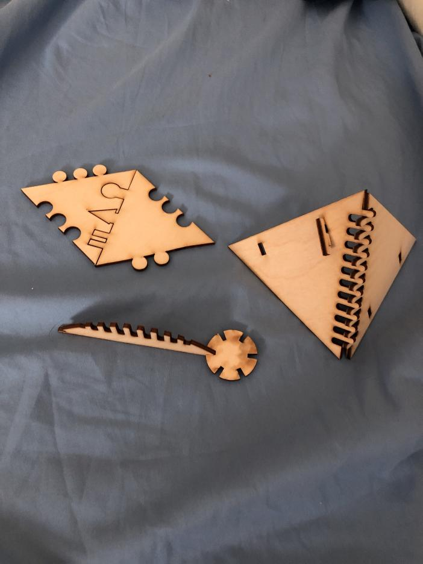
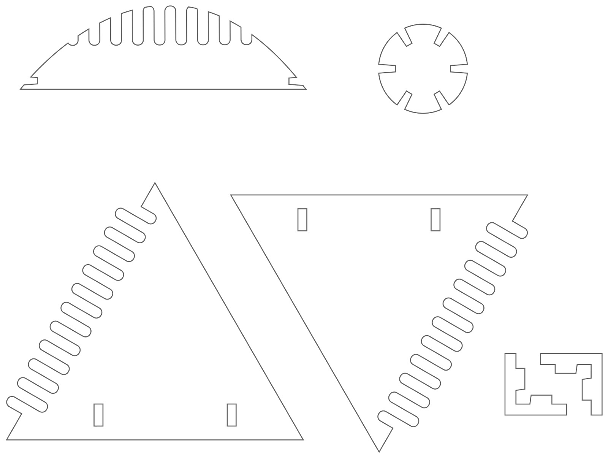

Phase 1 -- Introduction, Reading and Simple Tesselation amd Module Exercise
First Pass : Exercise in Testing some 2d Tesselations and Origami Modules

In Tesselation, I used six construction papers of different colors to produce the tesselation, in order to better reflect the tesselation effect among various patterns. In this process, in order to get a more accurate pattern, I cut out my shape with a white model card paper and then used the model as my tool to draw and cut out my patterns. Due to the great instability of manual paper-cuts, my graphics can not be 100% the same, but they can achieve the tesselation effect to the greatest extent.
In my Origami Paper project, I use paper of different colors on both sides to fold my Petra star. Then I took the stars apart and recombined them in different ways to make different shapes.
Second Pass : Exercise in group Tesselation and Modularity with some 2d Shapes
Team: Future Artists
Our common shape

My progress
My final pieces
Our testing
Our final
Review: In the group of Tesselation and Modularity with 2D Shapes, our group experienced from the beginning of how to make common Shapes, to the final test of tessellate, then everyone had designed their own different Shapes. In this process, I realize that tessellations had strict requirements on the precision of graphic design. If there was any difference in size or common side between shapes, the tessellations could not be carried out. The team members in our group all came up with their own unique designs and cooperated to put them together in the end. From the beginning impossible to the last step of modification, testing. And finally we get our result.
Phase 2 -- 3D Fastener BrainStorming Designs, Mockups and design approuches
paper fastener design

When I first started thinking about fastener, I wanted to make elements that could be twisted and connected together. My shape is inspired by the shape of my paper-cut tessalation. I thought the hook would work well with another shape‘s hook, so I made this "mushroom" like shape. The head of the "mushroom" is well connected to another shape's head; The tail can go in the opposite direction (see picture 2). Therefore, when I put them all together and I got a twisted sphere.
Phase 2:Round 1 Fastener designs
Noor's Shapes
Steven's shapes
Tamaki's shapes

Mengshi's shapes
We decided to use a simple fastening design so that we could connect two and three dimensions. We think triangles are good for stitching together the three-dimensional model we want, and they're also good for joining two-dimensional shapes. Finger connection is the fastening mode that Tamaki came up with. So we developed our own design. Since we are new to the Laser Cut, we decided to use a simple fastening design as our experiment. We decided to use EVA foam (9" x 12") and cardstock (11" x 17") as the materials for our Laser cut, which Steven helped us to purchase and provide. As shown in the above figures, Noor designed a triangular shape with a polka dot fastening design. Tamaki's finger fastening design and I added my own fastening design based on Tamaki's finger fastening design: Key Lock and others.
Phase 3: Goldilocks Laser tests' to your project
Our group designs
Test #1


After the first attempt, we found that EVA form was too soft and did not get good results, which was not a good choice for the combination of 3D models. Relatively speaking, cardstock has a better effect. However, after discussion, we considered: Can cardstock withstand the combination after the shape proportion is enlarged? Is it stable enough to stand up? So we discussed that plywood might have been a better material option.
Test #2
I updated my shapes
Steven's Shapes
Our Test Shapes
Results



At our second attempt at applying plywood, we met with satisfaction and discovered that "flower" slots were firmer and worked better at fastener design than finger fastener. From this, we think slot should be our best fastener.
Phase 4 -- Virtual Work and Rough Draft Schema of Final Design
Our idea inspiration
Noor's Rough Draft

Tamaki's Rough Draft

Mengshi's Rough Draft
At this stage, we began to think about what we want to do most. Since we used slot as our fastener, I came up with the idea of the "Lantern". I put forward my ideas to my group members, and they all agreed.